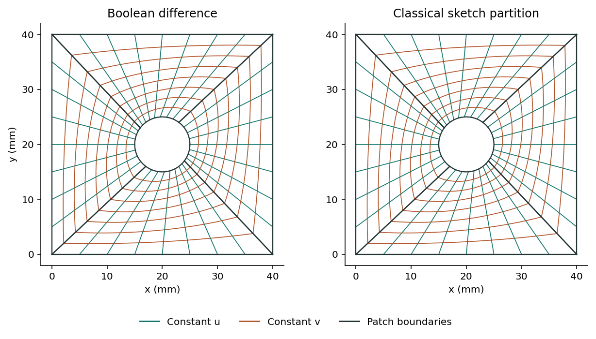

Boolean operations and edge treatments
Boolean construction
Boolean operations are implemented by several qualified constructors rather than one unrestricted B-Rep Boolean engine. Supported inputs include exact orthogonal sketch features, selected box/cylinder combinations, crossed orthogonal tools, polygon cuts, circular profiles, and specific NURBS crossings. A recipe declares the operation, operand geometry, coordinate frame, and feature history required by its family. The output is a new trivariate partition with active material blocks, exposed boundary faces, and an audit record.
For layered sketch booleans, event levels partition the axial range into material and void intervals. A blind pocket adds a floor and side walls; a through-hole has no floor. Overlapping cuts are resolved by the family planner from the union of tool regions, so a shared region is removed once. Cross-axis tools require a 3D arrangement: independent 2D cuts cannot simply be stacked when their induced surfaces intersect. Constructors therefore require supported, explicitly planned intersection events and a conforming shared partition. Tangency, coincident boundaries, unresolved event order, unsupported loop topology, excessive search, or exact-arithmetic overflow may cause a refusal. A refusal preserves the previous target artifact in transactional CLI commands.
Important modules include the axial Boolean builder, box/cylinder constructor, crossed-tool constructor, layered sketch planner, and crossed NURBS builder, with separate audit and JSON adapters. Related fixtures include:
tests/references/box_cylinder_classic.recipe.jsonfor a box/cylinder case;tests/references/crossed_tool_oracle.pyfor the independent crossed-tool oracle and replay protocol;tests/references/g2_cross_plate.recipe.jsonfor intersecting NURBS sketches;tests/references/s3_face_pocket.recipe.jsonfor an operation supported on a parent-face region;tests/counterexamples/andtests/regressions/for rejected and historically failing cases.
Use cargo run --locked --offline -- build RECIPE MODEL followed by
audit MODEL and, when needed, export-step MODEL STEP. For an automatic
curved-cell cover, run cargo run --locked --offline -- plan-patches MODEL
PATCHES.json. It assembles exact homogeneous nets in Rust, retains source
cell spans and maps exterior faces and interpatch subfaces back to their
source sides. Tall periodic cylinders are an explicit special case: the
box_cylinder_boolean_suite_v1 cylinder uses a custom periodic cover; the
publisher retains the two- and three-cover constructions in
scripts/build_box_cylinder_tall_patches.py and the native
src/cylinder_tensor_covers.rs implementation.

At mid-height the Boolean difference and the sketch-based through-hole produce the same four sector maps. The interior curves are images of constant parameter lines. The two panels use the same physical scale.
Exact command arguments for the current executable are available with --help. The
general Boolean experiment and its independent classification protocol are
documented in the
crossed-tool study.
Relation to volumetric untrimming
Massarwi, Antolin and Elber’s volumetric-untrimming method starts with an already trimmed B-spline trivariate and decomposes its trimmed domain into mutually exclusive tensor-product trivariates (which may be singular on the boundary). This is a related decomposition approach, not a general B-rep Boolean algorithm and not the input route used here. The crossed-tool constructor instead starts with two source sketches. It first splits and pairs their monotone arcs, then chooses material columns in a shared arrangement. In the published SolidCraft crossed-tool fixtures, the intersection has two charts and the union has ten; both preserve original profile intervals. Partial faces remain where a column continues through a neighboring cut plane. F. Massarwi, P. Antolin, and G. Elber, “Volumetric untrimming: Precise decomposition of trimmed trivariates into tensor products,” Computer Aided Geometric Design 71 (2019), 1–15, DOI 10.1016/j.cagd.2019.04.005.
Edge treatments
Fillets and chamfers are represented as geometric feature operations with their own local charts, not as cosmetic mesh edits. The treatment can alter the boundary parameterization, block topology, and Jacobian conditioning. The implementation retains the surrounding material partition and adds the qualified transition maps. Some fixed-partition treatments can be expressed with local rim charts; other cases require remeshing/repartitioning or are rejected. Radius/width bounds, tangent supports, corner combinations, and clearance are family-specific. A successful chart on one annulus or bracket does not establish support for arbitrary edge selections or variable radii.
Relevant modules include the annular charts, annular audit, offset rail, stock rim, bracket edge edits, and rational sectors, plus their associated audits. Reproducible studies are the four-block annulus topology, annulus edge states, and fixed-partition rim results linked from the project documentation index.
Treatment preconditions commonly include a strictly positive radius or
chamfer width, sufficient local stock, nondegenerate tangent supports, and a
compatible boundary chain. Zero or negative radii, self-intersecting offsets,
zero-height material, and supports that collapse or reverse a chart are
rejected. The exact failure mode is schema- and constructor-specific; consult
the matching audit and tests/counterexamples/ rather than inferring a
universal tolerance.
Masalha, Cirillo, and Elber present several methods for constructing trivariate fillets between input trivariates, including functional-composition and half-volumetric-Boolean-sum approaches. This is related volumetric-fillet work; it does not certify the annulus charts described here. For the reference annulus, a radius check and tangent agreement on the boundary establish the blend geometry. Testing the volume determinant at the same rail answers a different question. A strictly positive lower bound on every closed integration span is required for the regular ten-volume result. R. Masalha, E. Cirillo, and G. Elber, “Heterogeneous parametric trivariate fillets,” Computer Aided Geometric Design 86 (2021), article 101970, DOI 10.1016/j.cagd.2021.101970.
Exact simplification and geometric identity
Exact operations include rational knot insertion, Bézier extraction, degree elevation, restriction to rational subintervals, supported homogeneous subdivision, and the crate’s restricted degree-one knot removal when reinsertion recovers all homogeneous controls exactly. These transformations preserve the represented curve/map algebraically, subject to checked integer arithmetic and the family’s common-scale convention. They can refine the representation without changing a logical design-volume identity. Approximate knot removal is a different operation and needs an explicit error contract and audit. Tiller’s NURBS curve/surface algorithms include error analysis, while Eck and Hadenfeld optimize a local single-knot removal under several norms; neither reference describes the crate’s exact-only operation. Point sampling cannot establish exactness. See Tiller, “Knot-removal algorithms for NURBS curves and surfaces,” Computer-Aided Design 24(8) (1992), 445–453, DOI 10.1016/0010-4485(92)90012-Y, and Eck and Hadenfeld, “Knot removal for B-spline curves,” Computer Aided Geometric Design 12(3) (1995), 259–282, DOI 10.1016/0167-8396(94)00012-H.
For model edits, persistent keys are based on canonical rational geometry and feature provenance in the families that support them. Unchanged cells can retain IDs across a local edit; cells incident to moved geometry may receive new keys. Global identity matching across different topologies and unrestricted selection of corner valence remain open problems. See the knot-reduction implementation, fixed-span topology, sketch partition plan, and exact trace/subdivision modules.
Verification layers
Do not conflate a successful construction with every downstream claim:
the recipe-to-model audit checks its family contract and recorded topology;
STEP export checks exchange serialization but is not an independent reader;
STEP re-import in a separate CAD kernel checks B-Rep validity, closure, mass, and selected classifications under that reader’s tolerances;
the analysis export has its own trace, rank, quadrature, and field checks.
Independent oracles and versioned reports are linked from the feature pages.
Run make check for the repository integration suite and
make check-published-geometry to rebuild tracked published geometry from
source recipes. The latter ensures the published model and native audit match
the current constructor; it is a repository-specific reproducibility check,
not a general proof of correctness.
Native commands for the reference solids
compose-axial tests/jobs/composed_axial.job.json result.jsonevaluates the union of the first two aligned rectangular extrusions, then subtracts the third. The output records each surviving control net, its source block, both axial intervals and the original owners of boundary faces. A disconnected first union cannot be passed to the second stage as one interval.cover-cylinder MODEL 2 OUTassembles the square core and the entire angular ring on the three-layer tall cylinder. Select3to keep two ring patches. The two-patch result describes the closed angular seam and retains every source interval. Serialized file hashes are publication metadata and are added by the file-based example.annulus-edges LAYOUT PROFILE OUTtakesfour-linear,four-quadratic,prepared-tenorprepared-twentyandsharp,chamferorfillet. The linear layout accepts sharp and chamfer states. The original quadratic layout preserves four volumes for all three states. Its fillet has zero determinant at the circular rails. On the prepared ten-chart layout all 128 integration spans each have a strict positive determinant certificate in all three states.